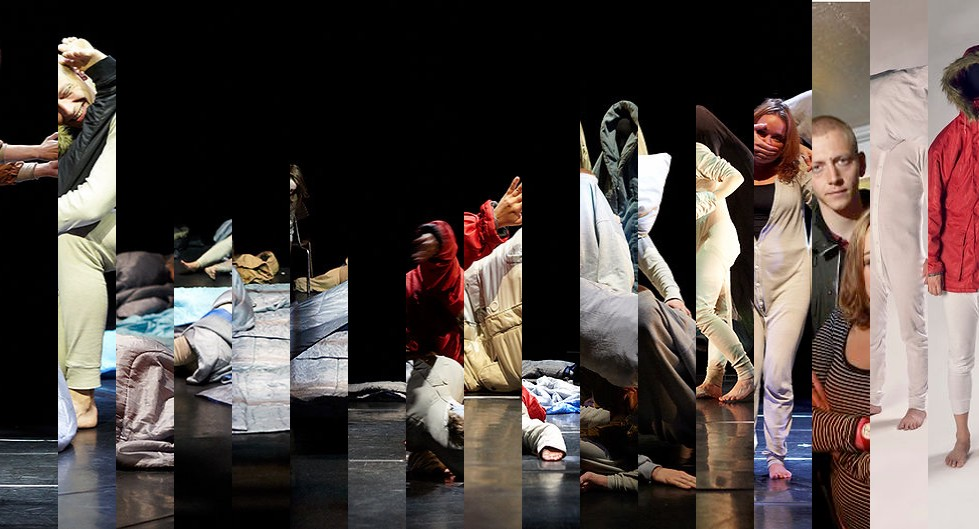

THE island
The project is a collaboration between:
Arne MacPherson, Freya Olafson, Friðgeir Einarsson and Ingibjörg Magnadóttir
Music: Guðmundur Vignir Karlsson, Kippi Kaninus
Lighting design: Hugh Conacher
Dramaturgical assistance:
Margrét Bjarnadóttir
Produced by LÓKAL Theatre Festival Reykjavík & núna (now) Winnipeg
Performed in English
Duration: 1 hour
A collaborative performance entitled The Island by Freya Olafson (Winnipeg), Arne MacPherson (Winnipeg), Ingibjörg Magnadóttir (Reykjavik) and Friðgeir Einarsson (Reykjavik). The project facilitates an artistic bridge between two distant but similar places: Iceland and Winnipeg, Manitoba, Canada. Isolated and cold, each is a wellspring of creative energy. The project focuses on our cultural and contemporary encounters with the phenomenon of isolation and its profound personal and emotional connotations. This co-production between núna (now) and the Lókal International Theatre Festival in Iceland, has been in development since May 2009 with the support of The Canada Council for the Arts, The Manitoba Arts Council, The Winnipeg Arts Council and The Icelandic Ministry of Education and Culture. After the well received premiere in Reykjavik during the Lókal Festival in September 2012 - it was performed in Winnipeg as part of núna (now) in June 2012.

